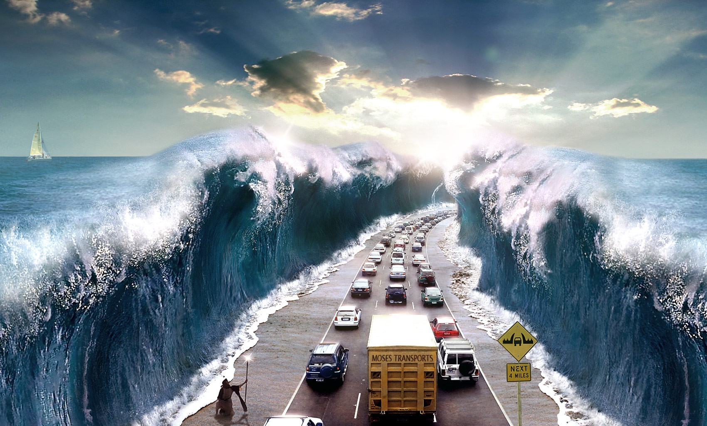

A storm surge is a rise in sea level that occurs during before and after the core of the storm.
Storm surges are created in deep waters by the circulation of the hurricane creating a vortex. When the hurricane moves into shallow waters the vortex can't go down, so it goes up making really big waves.
A storm surge can flood your house quickly and even kill you if you get stuck inside.
Another way people die is when they try to take videos of storm surges because after the first few waves the water level rises.
If you are ever caught in a Storm Surge get to higher ground and take cover.
Hurricane Sandy had world record waves being 32.5 feet tall.
